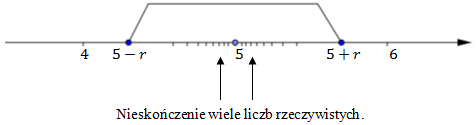
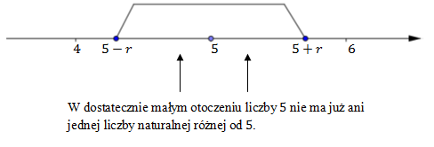
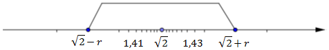

Definicja
Punkt \(x_0\) jest punktem skupienia zbioru liczbowego \(X\), jeżeli dowolnie
blisko \(x_0\) znajduje się nieskończenie wiele liczb ze zbioru \(X\).
Liczba \(5\) jest punktem skupienia zbioru liczb rzeczywistych \(\mathbb{R} \),
ponieważ dowolne blisko punktu \(5\) znajduje nieskończenie wiele liczb rzeczywistych. 
Dowolna inna liczba rzeczywista jest również punktem skupienia zbioru
\(\mathbb{R} \).
Liczba \(5\) nie jest punktem skupienia zbioru liczb naturalnych \(\mathbb{N} \),
ponieważ w otoczeniu punktu \(5\) o promieniu \(r\lt 1\) nie znajduje się już żadna inna liczba
naturalna różna od \(5\). 
Zbiór liczb naturalnych \(\mathbb{N} \) nie ma punktów skupienia.
W powyższych przykładach pojawiło się pojęcie otoczenia punktu. Podamy
teraz jego formalną definicję.
Definicja
Otoczeniem \(U(x_0;r)\) punktu \(x_0\) nazywamy przedział otwarty \((x_0 - r ,
x_0 + r)\) o środku w punkcie \(x_0\).
Wykorzystując pojęcie otoczenia punktu możemy teraz podać formalną definicję
punktu skupienia.
Definicja
Punkt \(x_0\) jest punktem skupienia zbioru \(X\), jeżeli w dowolnym
otoczeniu punktu \(x_0\) istnieje nieskończenie wiele wartości z \(X\).
Sam punkt skupienia może należeć do zbioru \(X\) lub nie.
Każda liczba wymierna jest punktem skupienia zbioru liczb wymiernych \(\mathbb{Q}
\).
Liczba \(\sqrt{2}\) jest punktem skupienia zbioru liczb wymiernych \(\mathbb{Q}
\), pomimo, że nie należy do tego zbioru.
W dowolnie małym otoczeniu \(\sqrt{2}\) można bez
trudu wskazać nieskończenie wiele liczb wymiernych. 
W każdym otoczeniu liczby \(\sqrt{2}\) jest nieskoczenie wiele liczb
wymiernych.
Każda liczba rzeczywista jest punktem skupienia zbioru liczb wymiernych.